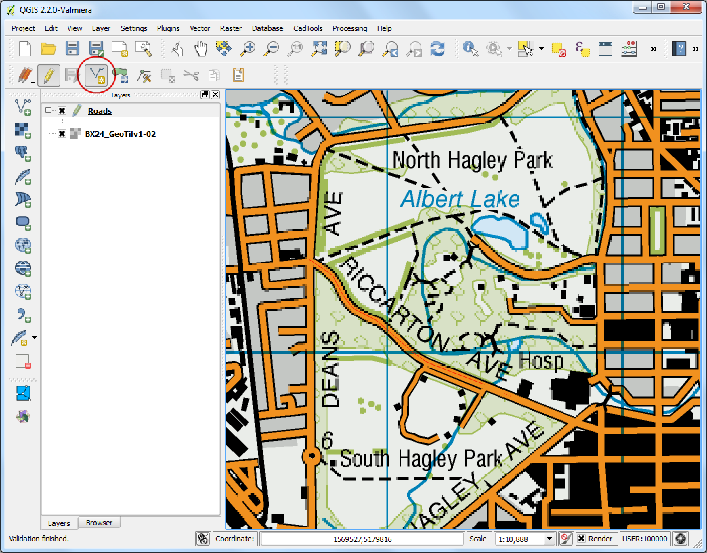

Cercare e scaricare dati da OpenStreetMap
[ Download PDF A4 Letter ]
Ottenere dati di alta qualità è essenziale in qualsiasi compito si intenda realizzare con i sistemi GIS. Una straordinaria risorsa per dati gratuiti e liberamente accessibili è OpenStreetMap (OSM) <http://www.openstreetmap.org/>`_ . Il database di OSM è costituito da strade, dati locali e poligoni di edifici. L’accesso ai dati di OpenStreetMap nel formato GIS è completamente integrato in QGIS. Questa esercitazione spiega il processo attraverso cui cercare, scaricare e utilizzare dati OSM in QGIS.
Descrizione del compito
Cercheremo Londra nel database OSM, esamineremo e selezioneremo una parte della città, quindi estrarremo tutti i punti indicanti le posizioni dei pub in quella zona e, infine, li collocheremo all’interno di un nuovo shapefile.
Procedimento
Useremo 2 plugin per realizzare questo esercizio. Assicuratevi di avere installato il plugin OSM Place Search e OpenLayers. Qualora fosse necessario, vedetevi Usare i Plugins per avere istruzioni sullo scaricamento e l’installazione dei plugin.

Il plugin OSM Place Search si installerà automaticamente come un pannello in QGIS. Vedrete comparire quindi un nuovo pannello in QGIS, che si chiamerà OSM place search...

Il plugin Open Layers è installato sotto il menu Plugins. Questo plugin vi permette di avere accesso alle mappe di base provenienti da vari provider direttamente in QGIS. Carichiamo the OpenStreetMap basemap in QGIS andando su .

Vedrete una carta del pianeta nella finestra principale di QGIS.
Nota
Se non vedete alcun dato assicuratevi di essere connessi mentre le “piastrelle” della mappa di base vengono progressivamente importate da Internet. Potete anche usare lo strumento Sposta Mappa per muovere la mappa leggermente, cosa che provocherà un refresh della mappa stessa.

Adesso facciamo una ricerca per trovare Londra. Digitate l’interrogazione nella casella “name contains...” all’interno del pannello OSM Place Search. Digitate London.
Ora potrete esaminare i risultati e la zona che sceglierete verrà evidenziata sulla mappa. Scegliete il primo risultato - che è la città di Londra nel Regno Unito - e cliccate sul pulsante zoom al di sotto del pannello.

Vedrete il layer di base muoversi e centrarsi intorno alla città di Londra. Potete usare lo zoom per ingrandire e selezionare l’area di vostro interesse. Per questa esercitazione potete selezionare il centro della city, proprio come nell’immagine seguente.

Ora possiamo scaricare i dati presenti nella mappa. Andate su .

Nella finestra di dialogo Scarica dati OpenStreetMap scegliete come Dalla mappa nella scheda Estensione. Scegliete liberamente il percorso in cui salvare il file che chiameremo london.osm.

Il file scaricato con l’estensione .osm è un file di testo in formato OSM XML <http://wiki.openstreetmap.org/wiki/OSM_XML>. Noi, tanto per cominciare, dobbiamo convertirlo in un formato che possa essere facilmente letto da QGIS. Andate su .
Nota
Adesso non abbiamo più bisogno del plugin OSM Place Search , potete fare click sul pulsante di chiusura per rimuoverlo dalla finestra principale. Quando ne avrete ancora biosogno potete chiamarlo da (Windows) o (Linux).

Scegliete il file london.osm come file XML in input. Chiamate quindi il file DB SpatiaLite in output con il nome di london.osm.db. Assicuratevi che la checkbox Crea connessione (SpatiaLite) dopo la importazione sia barrata.

esso l’ultimo passo. Abbiamo bisogno di creare dei layers con geometrie SpatialLite che possano essere visualizzati e analizzati in QGIS. Questo si fa eseguendo .

Il london.osm.db file contiene tutti i tipi di geometria presenti nel database OSM. - Punti, Linee e Poligoni. I layer GIS di norma contengono solo un tipo di geometria, per cui dobbiamo sceglierne una. Dal momento che, in origine, ci eravamo detti interessati ai punti che individuano i pub, è necessario scegliere Punti (nodi) nella scheda Esporta tipo. Se fossimo stati interessati alla rete stradale avremmo scelto Polilinee (aperte). Scriviamo nello spazio Nome del layer di output il nome del file london_points. Come sappiamo i dati GIS sono costituiti di due parti, geometrie e attributi. Noi siamo interessati anche al nome del pub, non solo alla sua posizione geometrica. Quindi dovremo esportare anche questa informazione. Click sul pulsante Carica da DB nella sezione :guilabel: tag esportati Questo permetterà la visualizzazione di tutti gli attributi del file london.osm.db. Spuntate le caselle dei campi name e amenity. Se volete imparare di più circa il significato di ciascun attributo potete andare su OSM Tags <http://wiki.openstreetmap.org/wiki/Tags>.
Assicuratevi che la checkbox Carica sulla mappa quando finito sia spuntata e fate click su OK.

Vedrete un nuovo layer puntuale chiamato london_points caricato in QGIS. Notate che questo contiene TUTTI i punti presenti nel database OSM da quella vista. Dal momento che noi siamo interessati soltanto ai pub, abbiamo bisogno di effettuare una query di selezione che ci dia come risultato soltanto i pub. Click con il tasto destro sul layer london_points` e selezionate Apri tabella attributi.

Noterete che alcune geometrie hanno come attributo il valore pubs elencato sotto la colonna amenity. Fare click su l pulsante Seleziona elemento usando un espressione.

Inserite l’espressione “amenity” = ‘pub’ e fate click su Select.

Torniamo nella finestra di QGIS. Vedrete alcuni punti colorati in giallo. Sono il risultato della nostra query. Fate click con il tasto destro sul layer london_points e scegliete Salva Selezione con nome....

Nella finestra di dialogo :Salva la selezione con nome... ` inserite il nome del file di output come ``london_pubs.shp`. Lasciate tutte le altre opzioni come sono e assicuratevi che la casella aggiungi il file salvato alla mappa sia spuntata. Click su OK.

Vedrete un nuovo layer chiamato london_pubs nella finestra principale di QGIS. Spegnete il layer london_points di cui non abbiamo più bisogno.

La creazione dello shapefile dei pub a questo punto è completa. Potete usare lo strumento Informazioni elemento per fare click su uno qualsiasi dei punti e vederne gli attributi.